Residential / Zirakpur
Yogesh Residence
A calm contemporary home shaped by soft curves, warm light and thoughtfully integrated storage.
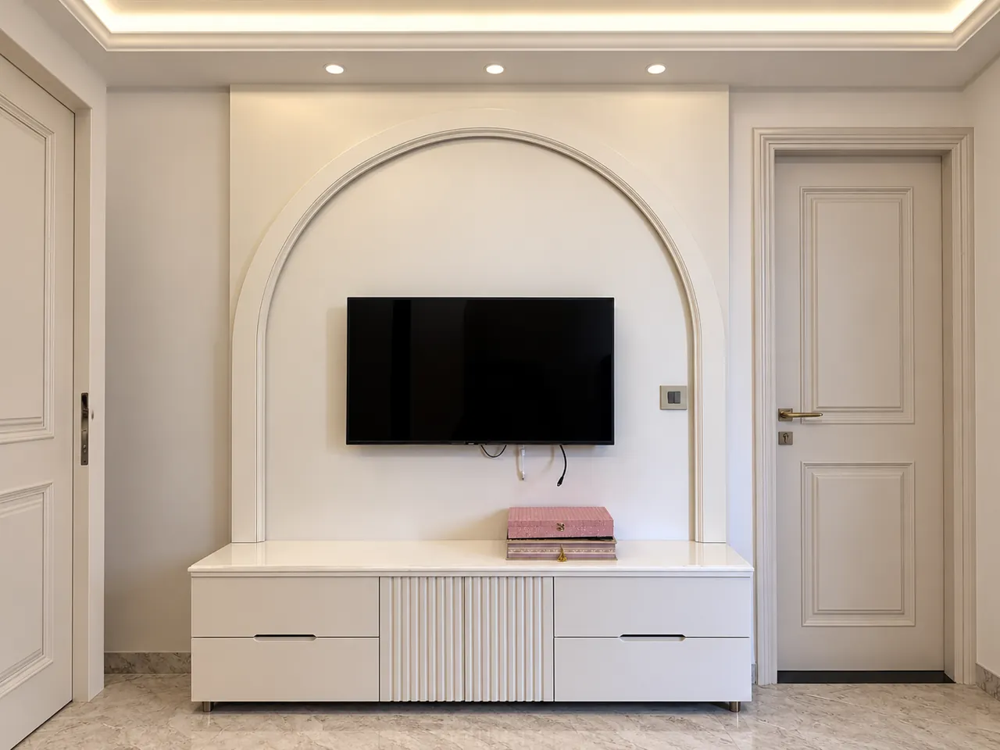
The project
A closer look.
- Location
- Zirakpur
- Category
- Residential
- Studio
- DMS Studio · Mohali
The Zirakpur residence pairs a sculpted TV feature wall and built-in console with a custom fluted wardrobe, bringing considered detail to everyday spaces.
Design concept
Soft ivory finishes, restrained curves and warm lighting give the bedroom and living area a composed, welcoming feel.
Scope
Custom wardrobe detailing · TV feature wall · Built-in storage · Ceiling and lighting details
Materials & finishes +
The supplied photographs show painted cabinetry, decorative wall moulding, stone-look flooring and integrated lighting. Exact product and finish specifications were not provided.
Project videos / Original clips
Walk through the space.
6 original project clips. Select play to load a video.
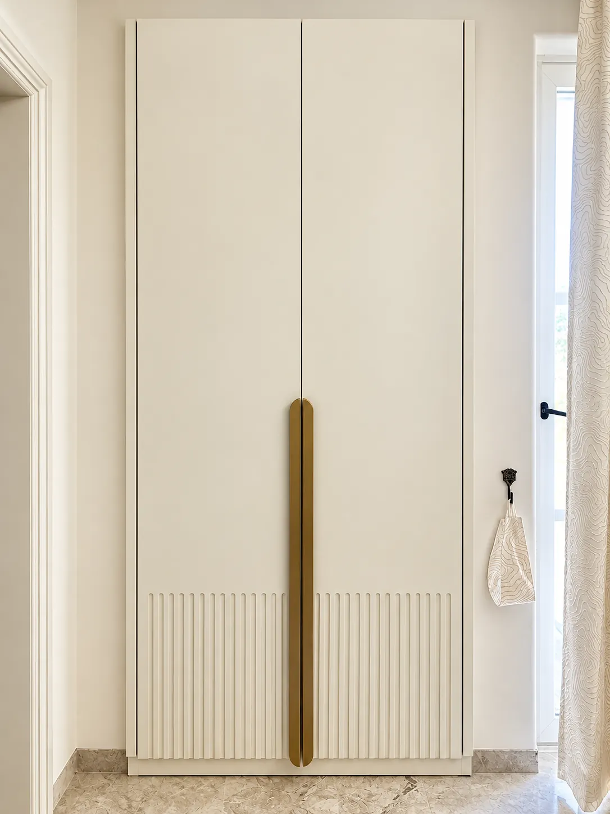
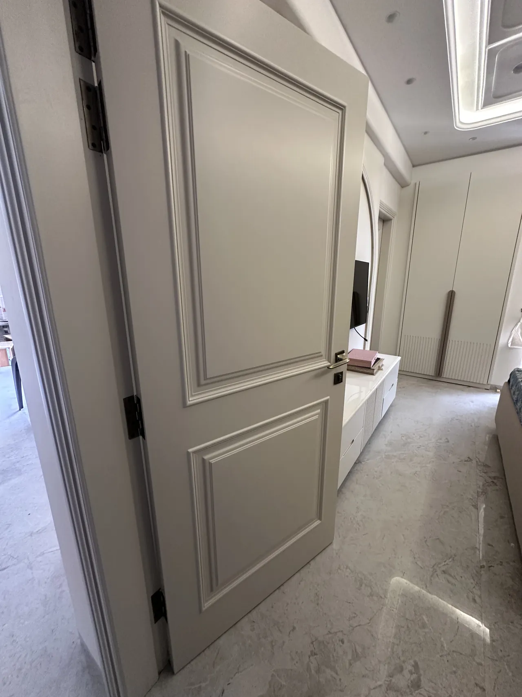
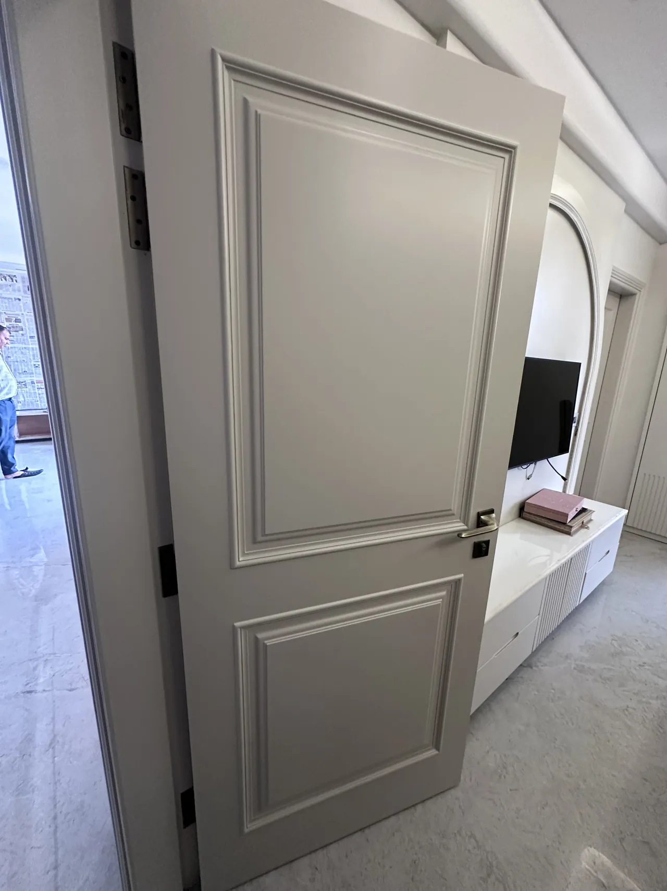
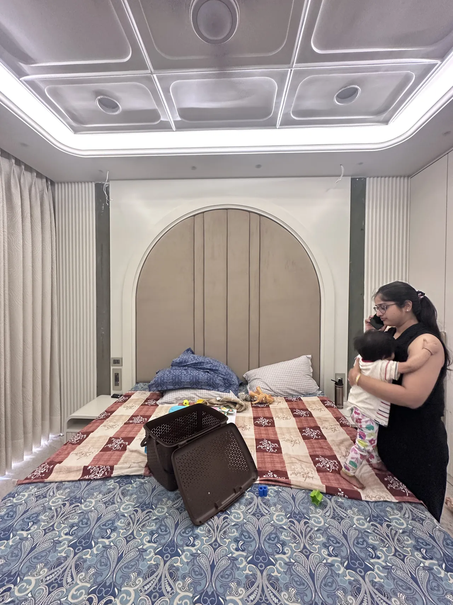
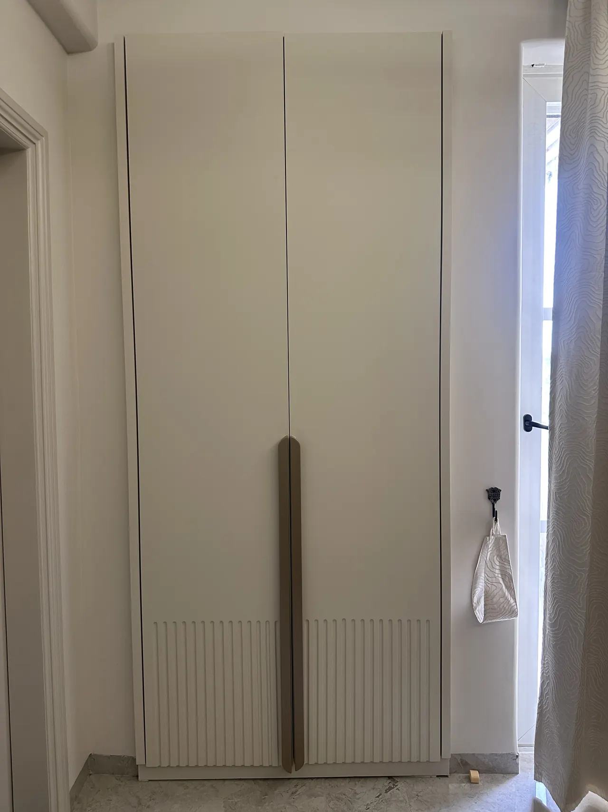
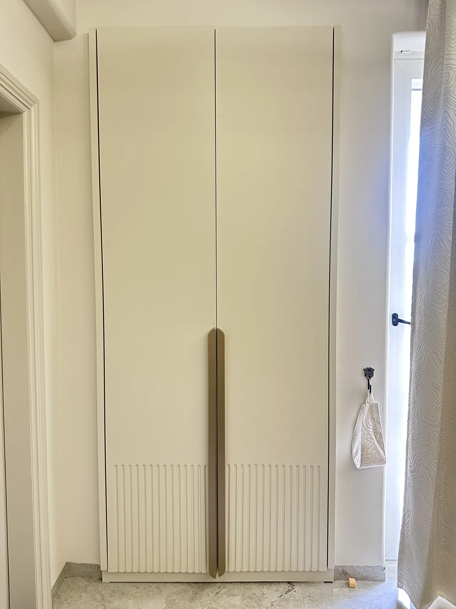
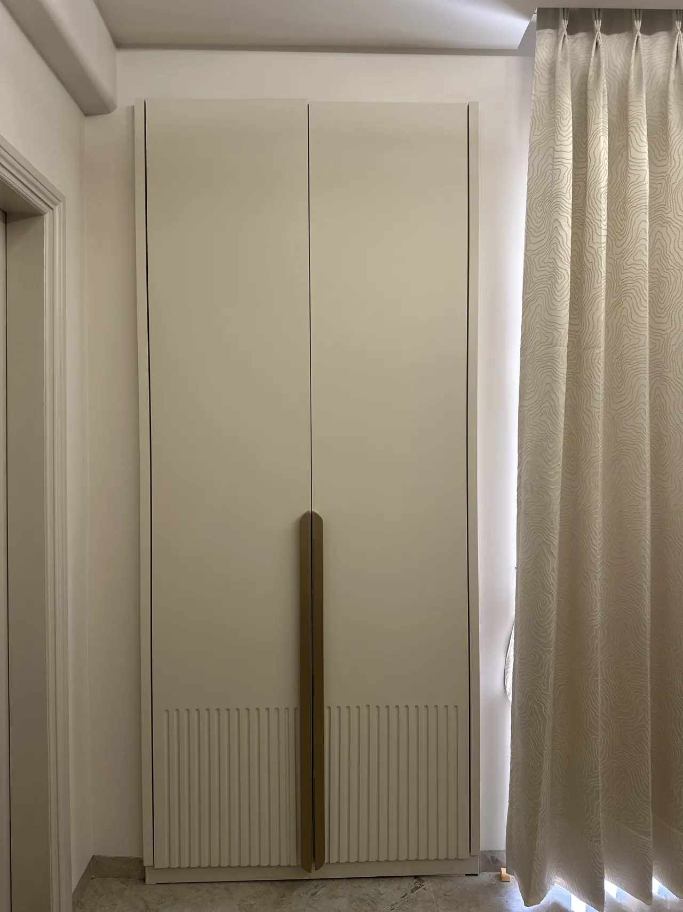
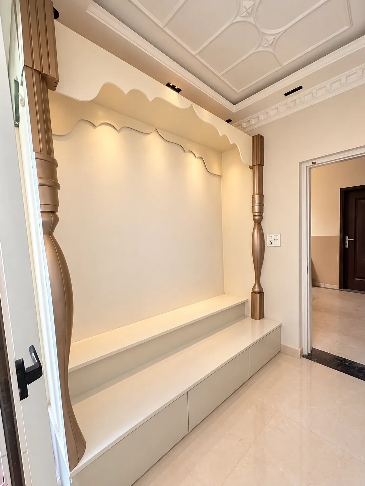
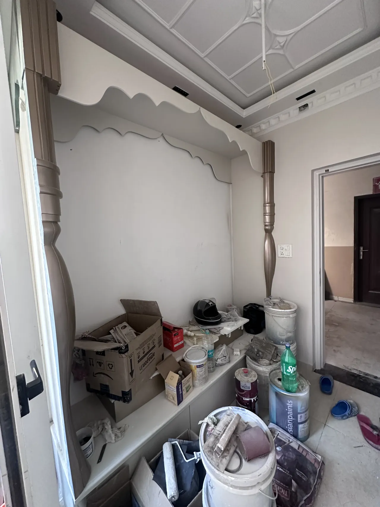
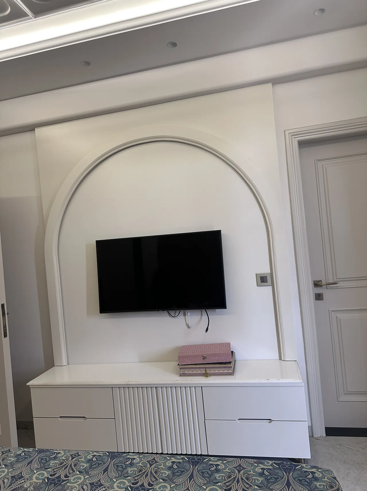
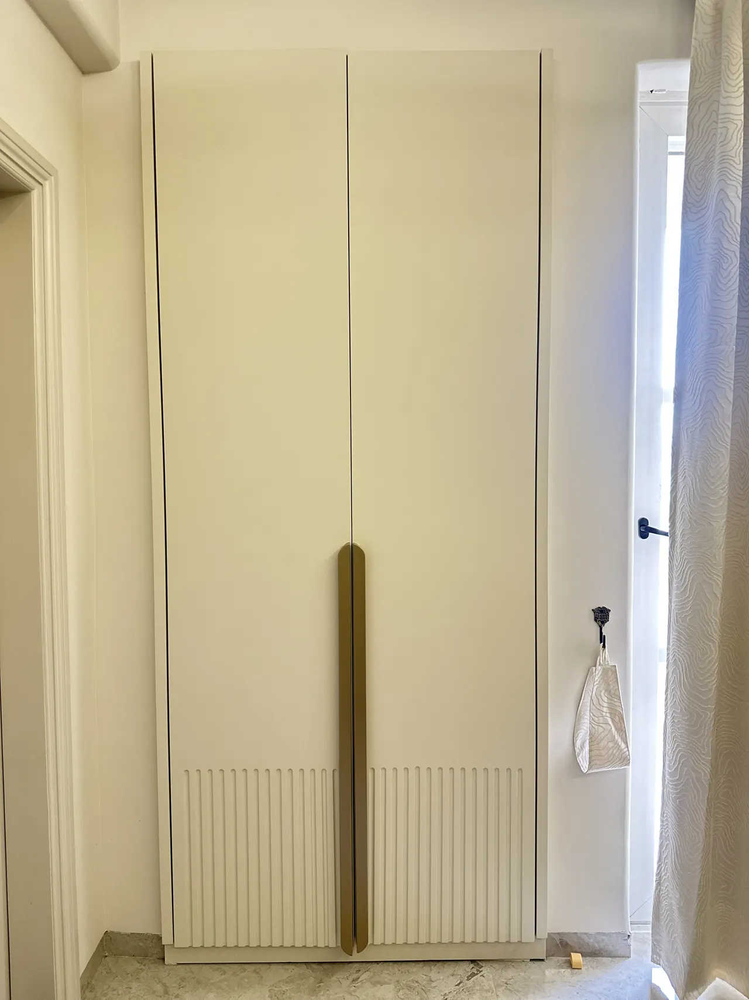
Project details
Good to know.
Where is Yogesh Residence?
Yogesh Residence is a residential interior project in Zirakpur.
Which features are documented in this home?
The project record highlights a sculpted TV wall and built-in console, a custom fluted wardrobe, storage and lighting details.
Does the project page include videos?
Yes. It includes six original walkthrough clips alongside the project photographs.